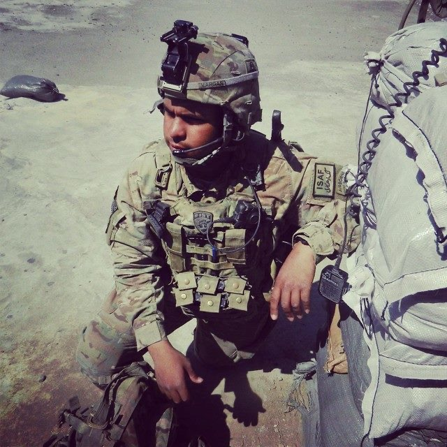

A Short Biography on Jose's Life
My name is Jose Vargas Figueroa and I was born in Puerto Rico, but grew up in New Bedford, Massachusetts. After graduating high school in 2009 I decided to attend Bridgewater State College for Criminal Justice, but I ended up dropping out my second semester to join the Army. I was in for four and a half years as a Forward Observer serving in South Korea, Fort Campbell, Kentucky, and a tour in Afghanistan. After I got out I was all over the place, starting at Westfield State University, moving back to my home town and erecting scaffolds, to obtaining my Class A CDL and driving trucks for a little bit. While driving trucks I almost had my left arm torn off by falling off the top of the truck and it getting caught on the side of it. A few months later, my wife and I, bought a house in Pascoag, Rhode Island which was now an hour away from my truck driving job. I ended up quitting the job and a couple of months before the start of the semester I decided to attend NEIT to major in Software Engineering. I enjoy learning about new technology, understanding how things work, and hope to eventually work partly remotely writing up code. On my free time I enjoy having cookouts, family events, fishing, hunting, video games, and spending time with my wife.